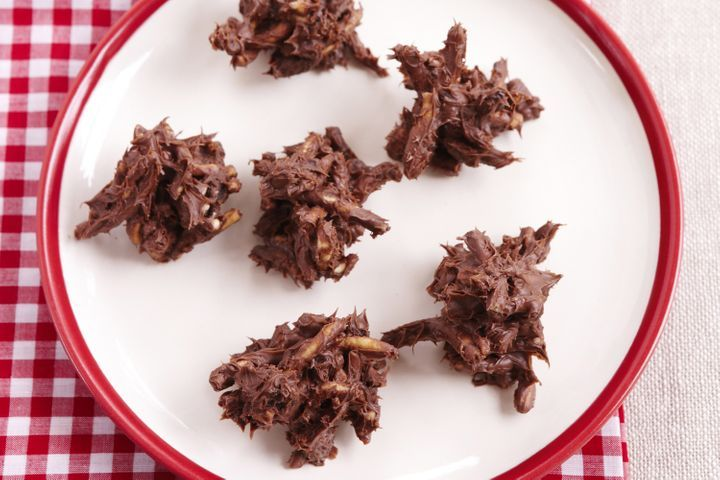

Spiders Australian Dessert Recipe

Description
Create a sweet and savoury Australia delicacy in the chocolate spider.
Ingredients
- 200g (7 oz) milk chocolate, chopped
- 2 cups (50g) cornflakes
- 1 cup (100g) desiccated coconut
- 1/3 cup (80g) crunchy peanut butter
Steps
- Melt the chopped chocolate and mix in crunchy peanut butter until smooth.
- In a separate bowl, combine cornflakes and desiccated coconut.
- Pour the chocolate-peanut butter mixture over the dry ingredients, stirring until coated.
- Spoon clusters onto a lined tray or into cupcake liners.
- Refrigerate for at least 30 minutes until the chocolate sets. Enjoy your Australian chocolate spiders with a delightful mix of crunch and sweetness!